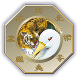

Ο Συλλογός μας

Το 2010 ιδρύθηκε στη Νίκαια ο Γυμναστικός Σύνδεσμος «Ο Προμηθέας». Θέτοντας σταθερές βάσεις και επενδύοντας σε διαχρονικές αξίες, όπως είναι οι πολεμικές τέχνες και η φιλοσοφία τους και ο αθλητισμός γενικότερα, το Σωματείο μας λειτουργεί έως και σήμερα με κεντρικό άξονα τον αθλητισμό και τον σεβασμό στον αθλητή. Στον Σύλλογο μας καλλιεργούμε KUNG FU το σύστημα shaolin chai jia nan quan της οικογενείας chuen , Wushu ,Sanda / Qingda ,Tai chi ,Qi gong ,αλλά και τμήμα Καλαθοσφαιρίσεως.
Ο Γυμναστικός Σύνδεσμος Νικαίας «Ο Προμηθέας» είναι αναγνωρισμένος από την Ελληνική Ομοσπονδία Γουσού Κουνγκ Φου και συμμετέχει ενεργά σε πανελλήνια, αλλά και Διεθνείς Διοργανώσεις .
Ο Προμηθέας Νίκαιας είναι αναγνωρισμένος από την Γ.Γ.Ε και μέλος της Ελληνικής Ομοσπονδίας Γου Σου Κουνγ Φου (Ε.Ο.Γ.Κ.Φ)
Πρωταρχικός σκοπός είναι η ανάπτυξη του αθλητικού ιδεώδους, μέσα από το wushu kung fu, η γνωριμία του κόσμου με τις πολεμιτέχνες, αλλά και η κατανόηση της φιλοσοφίας τους. Στόχος είναι η ισορροπία μεταξύ του νου και του σώματος, η προφύλαξη σωματικής ακεραιότητας και ΌΧΙ η καλλιέργεια επιθετικών συμπεριφορών.
Το Σωματείο μας όμως δεν περιορίζεται μόνο εντός των στενών ορίων της σχολής και στον αθλητικό χαρακτήρα, αλλά έχει επίκοινωνικό και φυσιολατρικό πρόσωπο. Στα πλαίσια αυτών των δράσεων πραγματοποιούνται εκδηλώσεις φιλανθρωπικού χαρακτήρπροπονητικά camp όπως και οργανώνονται εξορμήσεις στην ελληνική φύση (ορειβασία, πεζοπορία, αναρρίχηση κ.α)
Το Wu-shu Kung Fu αναγνωρίστηκε το 1999 από τη Διεθνή Ολυμπιακή Επιτροπή και το 2000 αναγνωρίστηκε αντίστοιχα η Ελληνική Ομοσποναπό τη Γ.Γ.Ε. με αποτέλεσμα οι πρωταθλητές μας να έχουν τα προνόμια μοριοδότησης όπως και τα Ολυμπιακά Αθλήματα.
Στο σύλλογο μας λειτουργούν καθημερινά τμήματα για αρχάριους και προχωρημένους.
Εγγραφές γίνονται καθ’ όλη την διάρκεια του έτους.